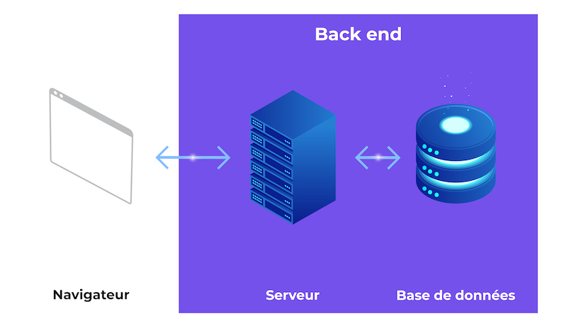

Le Développeur Back-End est en charge de l’ensemble des fonctionnalités d’un site web. A la différence du Développeur Front-End, le Développeur Back-End ne s’occupe pas de l’aspect ergonomique du site mais de l’aspect technique et fonctionnel. Il travaille dans l’ombre. Il peut concevoir un site web et dans ce cas réaliser lui-même l’architecture technique du site ; ou bien rester sur la plateforme instaurée et adapter des solutions techniques sur celle-ci. S’il crée le site, il devra partir de zéro et prendre en considération les inconvénients auxquels il devra faire face tout comme les leviers disponibles qu’il pourra mettre en place. La difficulté de sa tâche consistera à répondre aux besoins demandés tout en évaluant les risques potentiels en fonction des ressources humaines et matériels dont il dispose, du budget octroyé et enfin des délais accordés. Il doit être capable de combiner ses 3 facteurs lui permettant de mener à bien son projet.
|  |